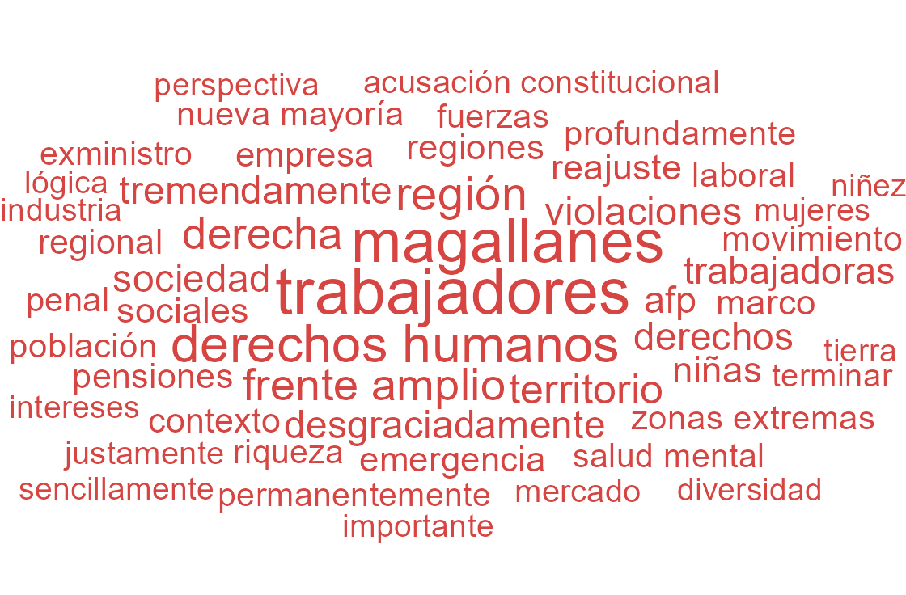
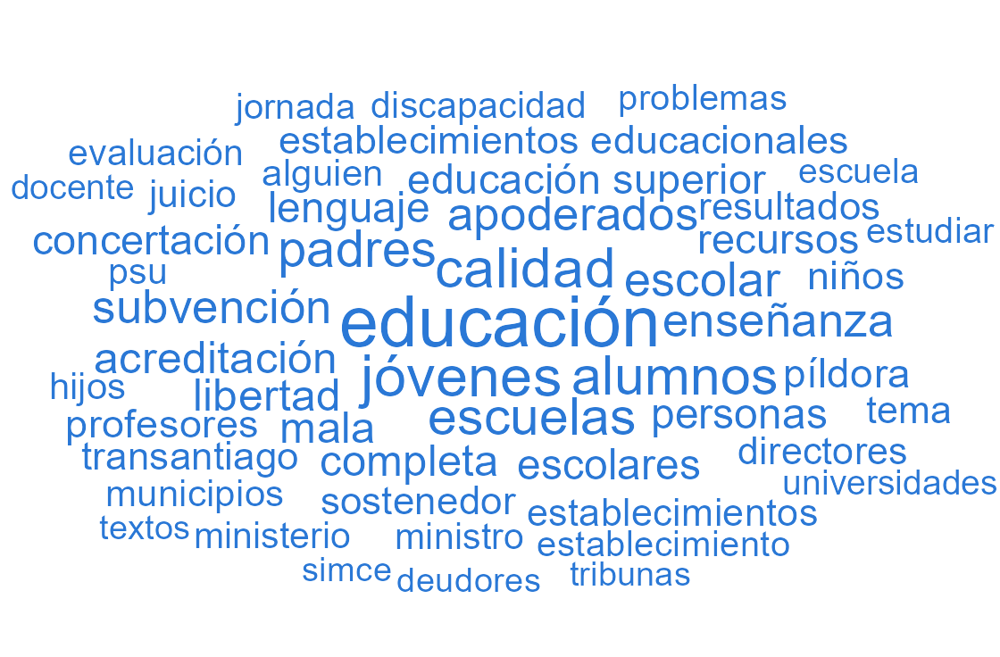

En la primera parte miré cómo votaban Boric y Kast. Los votos dicen dónde se ubica un diputado, pero no de qué habla ni con quién trabaja. Aquí miro lo otro. De dónde venía cada uno, cuánto hablaba en la Sala, qué palabras lo separaban del otro y de los suyos, con quién firmaba sus proyectos y qué hacía fuera de la Sala.
Dos carreras
Kast estuvo 16 años en la Cámara, cuatro períodos seguidos. Los tres primeros por el distrito 30, que reunía a San Bernardo, Calera de Tango, Buin y Paine, y el último por el 24, La Reina y Peñalolén. Boric estuvo 8 años, los dos períodos por Magallanes. Llegó en 2014 como independiente fuera de pacto y en 2018 volvió dentro del Frente Amplio, en un cupo del Partido Humanista.
Kast votó en el extremo derecho de la Cámara en todos sus períodos, entre el percentil 93 y el 100 de d1 (Tabla 1). Lo que cambió fue la dispersión. En 2010-2014, con Piñera en La Moneda, su d2 bajó al percentil 12 y votó con su bloque el 99% de las veces. Fue su único período como un diputado disciplinado de la derecha, y el único en que la derecha gobernaba. Boric estuvo en el extremo izquierdo en sus dos períodos.
Ni siquiera el partido es un dato simple. La Cámara registra a Kast en la UDI hasta julio de 2017, y la Biblioteca del Congreso lo da como independiente desde marzo de 2014. A Boric la Cámara lo tiene como independiente hasta 2020 y en Convergencia Social después, mientras la Biblioteca lo pone en el Partido Humanista entre 2018 y 2019. Las dos fuentes son oficiales y ninguna advierte que la otra dice algo distinto.
Cuánto hablaban
Boric habló mucho más. En sus 8 años tiene 249 discursos en la Sala, sin contar los informes que rindió a nombre de una comisión. Kast tiene 145 en 16 años, y cada vez menos. Fueron 41 en su primer período y 58 en el segundo, pero 21 en el tercero y 25 en el último (Figura 1).
Lo que los distingue
Cómo se mide. Para saber qué palabras son propias de cada uno uso tres medidas de keyness, que comparan cuántas veces usa una palabra uno y cuántas el otro. La razón de verosimilitud G² y el chi² son las dos que trae el paquete quanteda para esto, y las calculo con su función (Benoit et al., 2018). La tercera es un log-odds que corrige por lo común que es cada palabra en toda la Cámara del período (Monroe et al., 2008). Si una palabra sale arriba con las tres, no depende de cómo se mida.
De los discursos saco lo que dice la Mesa antes del turno, los nombres de personas que siguen a un tratamiento, las palabras vacías, las palabras de número y las fórmulas de la Sala. Las expresiones de dos palabras que casi siempre van juntas, como derechos humanos o educación superior, cuentan como una, y lo mismo los nombres de partidos y coaliciones.
En toda su carrera, lo que más separa a Kast de Boric es la educación (Figuras 2 y 3). Educación, jóvenes, calidad, alumnos, escuelas, padres, subvención, acreditación. Boric habla de trabajadores, de Magallanes, de derechos humanos, de su región, de la derecha y del Frente Amplio.
Las tres medidas coinciden. En toda su carrera, 15 de las 20 palabras más propias de Boric y 16 de las de Kast están entre las 20 primeras con las tres, y el orden según G² y según el log-odds tiene una correlación de 0,97 y 0,98. En 2014-2018 coinciden menos del lado de Boric, 7 de 20, porque Kast habló poco ese período y las medidas tratan distinto a las palabras que él casi no usó.
Boric

Kast

En la Cámara que compartieron, 2014-2018, la distancia se ve en los temas. Boric habla de trabajadores, de lo público, de la empresa y del mercado. Kast nombra al Partido Comunista, discute la identidad de género y el aborto, y habla de colegios, profesores y apoderados.
En su contexto
Una palabra suelta puede engañar. Estas son frases tomadas al azar de los discursos de cada uno con algunas de sus palabras más propias.
Qué decía cada uno en cada momento
La keyness compara a uno con el otro. Para ver qué fue propio de cada período uso TF-IDF, que premia las palabras que un diputado usa mucho y el resto de la Cámara de ese período usa poco (Tabla 2). Kast pasa de la educación superior y la acreditación en 2002-2006 a la píldora del día después, los niños autistas y la subvención en 2006-2010. En 2010-2014 aparecen la ley del tabaco, con el techo retráctil y la pared que definen un espacio cerrado, la venta de alcohol en los minimarket y la extradición de Galvarino Apablaza. En 2014-2018, el sexo registral, la Universidad ARCIS y el Partido Comunista. Boric empieza con Magallanes, el Frente Amplio y su crítica al Estado subsidiario, y termina con Magallanes, Puerto Williams y las zonas extremas.
Cómo se conectan sus palabras
Una red de coocurrencias muestra qué palabras aparecen juntas, a menos de cinco palabras de distancia. Con las 35 palabras que más usó cada uno, aparece algo que la keyness esconde. Los dos hablaban de educación. En la red de Kast casi todo pasa por ella, unida a la calidad, los niños y el ministerio. En la de Boric los vínculos se reparten. La educación pesa casi lo mismo que Magallanes y la región, y se une a lo público (Figura 4).
Frente a los suyos
La educación no separa a Kast solo de Boric. Frente al resto de la derecha entre 2002 y 2018, las palabras más propias de él también son de educación. Escuelas, niños, apoderados, educación superior, acreditación, universidades, lenguaje (Figura 5).
A Boric, frente al resto de la izquierda entre 2014 y 2022, lo distinguen Magallanes, las zonas extremas, Punta Arenas, el Frente Amplio y la Nueva Mayoría, los derechos humanos y las universidades estatales. Es decir, su región y su propio grupo, más que un tema del país.
Con quién firmaban
Las mociones, los proyectos que presentan los propios diputados, llevan hasta 10 firmas. Con quién firma un diputado dice algo de con quién trabaja. Aquí los dos se separan de otra forma.
Kast firmó siempre con la UDI, y cada vez más cerrado. Las mociones que firmó con al menos un diputado del otro bloque bajaron del 29% en 2002-2006 al 10% en 2014-2018, cuando la mediana de la Cámara era 44% (Figura 6). En sus dos últimos períodos quedó en el 3% menos transversal de la sala. En 2014-2018 tuvo 49 cofirmantes distintos, contra una mediana de 96,5, y los cuatro con que más firmó eran de la UDI (Tabla 3).
Boric, que en 2014-2018 era el que menos votaba con su bloque, firmaba con todo el arco de la izquierda, del Frente Amplio y el Partido Comunista al PPD y la Democracia Cristiana. El 39% y el 36% de sus mociones tuvieron firmas del otro bloque, algo bajo la mediana pero lejos de los extremos.
Fuera de la Sala
La Sala es una parte del trabajo. Labor Parlamentaria, de la Biblioteca del Congreso, registra además las mociones, las peticiones de oficio, los proyectos de acuerdo y de resolución, los permisos y las licencias (Figura 7). Kast firmó 256 mociones en 16 años y Boric 126 en 8, unas 16 por año cada uno. Boric presentó 94 proyectos de resolución y Kast 113 proyectos de acuerdo.
La mayor diferencia está en las peticiones de oficio, en que un diputado pide información a un servicio del Estado. Labor las registra desde 2010. Entre 2010 y 2013 Kast pidió 2. En 2014 pidió 172, y en 2017, el año de su primera candidatura presidencial, 496, cerca del 7% de todas las de la Cámara ese año (Figura 8). Boric pidió entre 34 y 112 por año desde 2015.
Lo que dice y lo que no
Los discursos no muestran a dos diputados que hablaran de lo mismo desde lados opuestos. Muestran agendas distintas. Kast se hizo un lugar en la Sala con la educación y, al final, con el Partido Comunista, el gobierno de Bachelet y la agenda valórica. Boric, con su región, el trabajo y los derechos humanos. Y trabajaban distinto. Kast firmaba cada vez más solo con los suyos, mientras Boric, el que menos votaba con su bloque, firmaba con toda la izquierda.
Son dos casos y los textos son cortos, sobre todo los de Kast al final de su paso por la Cámara. Las medidas describen, no explican.
Datos, código y decisiones
- Discursos en la Sala de la Cámara de la base de intervenciones de Labor Parlamentaria, del 11 de marzo de 2002 al 10 de marzo de 2022, con el orador revisado. Solo intervenciones, sin peticiones de oficio, homenajes ni indicaciones. Fuera los informes de comisión, que se reconocen porque la Mesa da la palabra al diputado informante o anuncia que alguien rinde el informe.
- G² y chi² se calculan con la función textstat_keyness de quanteda.textstats, con sus valores por defecto, que aplican la corrección de Williams a G² y la de Yates a chi² cuando alguna frecuencia esperada es menor que 5. El log-odds no está en el paquete y se calcula con su fórmula. Las tres se calculan sobre una matriz de documentos y términos de quanteda, y solo con los términos que el par usa al menos 8 veces, en al menos 4 discursos. El prior del log-odds es la frecuencia de cada término en toda la Cámara del período, escalada a 10.000 palabras.
- Una expresión de dos palabras cuenta como una si aparece al menos 30 veces en la Cámara 2002-2022 y si la menos frecuente de sus dos palabras aparece en ella al menos el 40% de las veces.
- El copatrocinio sale de las autorías de las mociones de origen en la Cámara, por fecha de ingreso. Se usan los diputados con id de la Cámara, porque la tabla de autores trae firmantes duplicados sin id al cruzar sus dos fuentes. El bloque de cada cofirmante es su bloque B-Call en el período.
- El distrito sale de las reseñas biográficas de la Biblioteca del Congreso. La militancia, de los datos abiertos de la Cámara y de la Biblioteca, que no coinciden. La actividad en Labor Parlamentaria es la registrada a nombre de cada persona.
- El código está en el repositorio.
Referencias
Benoit, K., Watanabe, K., Wang, H., Nulty, P., Obeng, A., Müller, S. y Matsuo, A. (2018). quanteda: An R package for the quantitative analysis of textual data. Journal of Open Source Software, 3(30), 774. https://doi.org/10.21105/joss.00774
Monroe, B. L., Colaresi, M. P. y Quinn, K. M. (2008). Fightin' words: Lexical feature selection and evaluation for identifying the content of political conflict. Political Analysis, 16(4), 372-403. https://doi.org/10.1093/pan/mpn018
Toro-Maureira, S., Reutter, J., Valenzuela, L., Alcatruz, D. y Valenzuela, M. (2025). B-Call: integrating ideological position and voting cohesion in legislative behavior. Frontiers in Political Science, 7, 1670089. https://doi.org/10.3389/fpos.2025.1670089